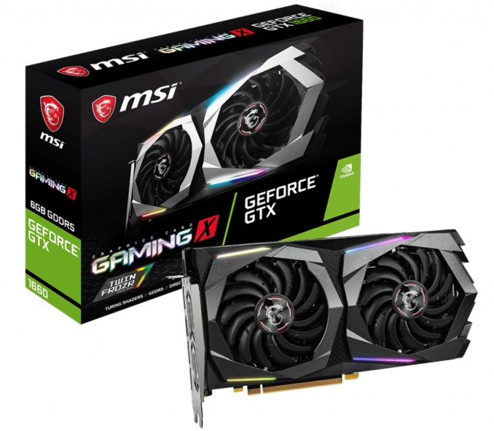
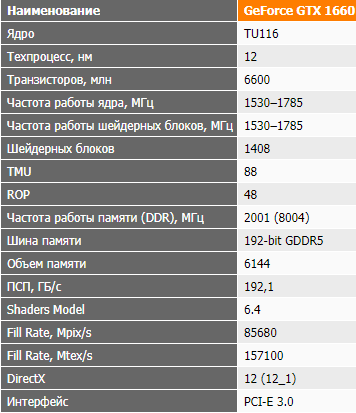

Описание товара:
Продолжаем знакомство с новинками NVIDIA. Вскоре после анонса GeForce GTX 1660 Ti была
представлена младшая версия данной видеокарты в лице GeForce GTX 1660. О ней и поговорим в этом обзоре.
Протестируем MSI GTX 1660 Gaming X 6G, сравним со старшими видеокартами и моделями прошлого поколения.
Характеристика:

Подробное описоние товара: